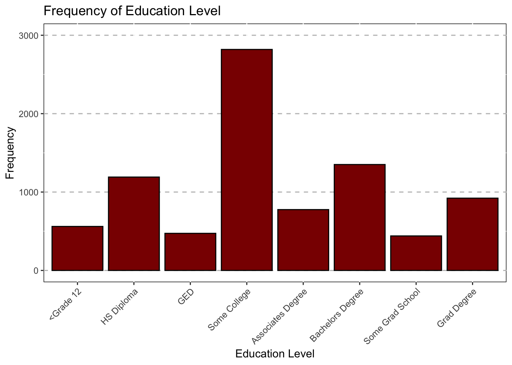
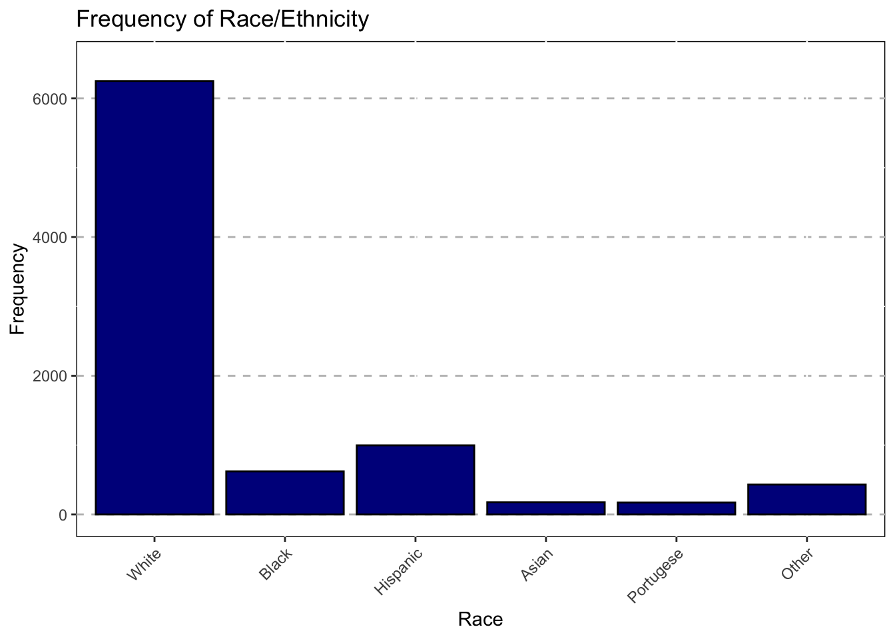
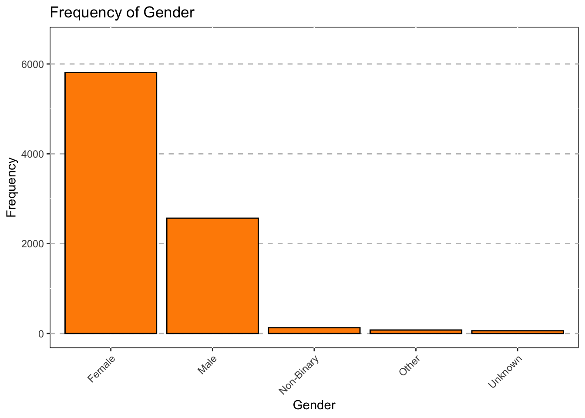
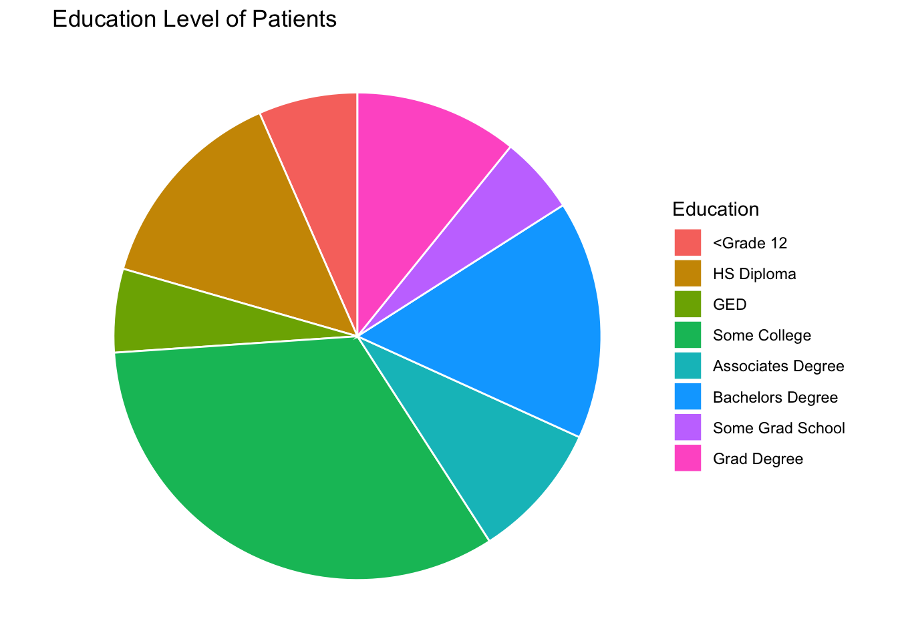

knitr::opts_chunk$set(echo = TRUE, message=FALSE,warning = FALSE)
# Libraries
library(tidyverse)## ── Attaching core tidyverse packages ──────────────────────── tidyverse 2.0.0 ──
## ✔ dplyr 1.1.0 ✔ readr 2.1.4
## ✔ forcats 1.0.0 ✔ stringr 1.5.0
## ✔ ggplot2 3.4.1 ✔ tibble 3.1.8
## ✔ lubridate 1.9.2 ✔ tidyr 1.3.0
## ✔ purrr 1.0.1
## ── Conflicts ────────────────────────────────────────── tidyverse_conflicts() ──
## ✖ dplyr::filter() masks stats::filter()
## ✖ dplyr::lag() masks stats::lag()
## ℹ Use the ]8;;http://conflicted.r-lib.org/conflicted package]8;; to force all conflicts to become errorslibrary(dplyr)
library(haven)
library(ggplot2)
library(tidyr)Read in the dataset.
df <- read_sav("~/Desktop/Coding/data/Mothership_DV.sav")
Mothership<-select(df,ID1:Sexuality_1,MDD_C:Day40_CUXOS,SUMdep_0:SUManx_1,SUMdep_DC,SUManx_DC,BL_CUDOS, BL_CUXOS)
view(Mothership)We can change the current variables to make them easier to interpret.
#recode varaibles
Mothership <- mutate(Mothership,
DC_status_1 = as.factor(DC_status_1),
DC_status_1 = recode(DC_status_1,
"1"="Complete",
"2"="Nearly Complete",
"3"="Insurance",
"4"="Nonatteneance",
"5"="Inappropriate",
"6"="Inpatient",
"7"="Withdrew",
"8"="Dissatisfaction",
"9"="Other"),
Education_1 = as.factor(Education_1),
Education_1 = recode(Education_1,
"1"="<Grade 12",
"2"="HS Diploma",
"3"="GED",
"4"="Some College",
"5"="Associates Degree",
"6"="Bachelors Degree",
"7"="Some Grad School",
"8"="Grad Degree"),
Gender_1 = as.factor(Gender_1),
Gender_1 = recode(Gender_1,
"0"="Female",
"1"="Male",
"2"="Non-Binary",
"3"="Other",
"4"="Unknown"),
Relationship_1 = as.factor(Relationship_1),
Relationship_1 = recode(Relationship_1,
"0"="Married",
"1"="Cohabitating",
"2"="Widowed",
"3"="Separated",
"4"="Divorced",
"5"="Never Married"),
Sexuality_1 = as.factor(Sexuality_1),
Sexuality_1 = recode(Sexuality_1,
"1"="Straight",
"2"="Gay",
"3"="Bisexual",
"4"="Other"),
IPT_track_1 = as.factor(IPT_track_1),
IPT_track_1 = recode(IPT_track_1,
"0"="General",
"1"="Trauma",
"2"="Young Adult",
"3"="BPD"),
Race_1 = as.factor(Race_1),
Race_1 = recode(Race_1,
"0"="White",
"1"="Black",
"2"="Hispanic",
"3"="Asian",
"4"="Portugese",
"5"="Other"),
Education_1 = as.factor(Education_1),
Education_1 = recode(Education_1,
"0"="<Grade 6",
"1"="Grades 7-12",
"2"="HS Diploma",
"3"="GED",
"4"="Some College",
"5"="Associates Degree",
"6"="Bachelors Degree",
"7"="Some Grad School",
"8"="Grad Degree"),
DC_status_1 = as.factor(DC_status_1),
DC_status_1 = recode(DC_status_1,
"1"="Treatment Complete",
"2"="Treatment Near Complete",
"3"="Insurance Stopped",
"4"="Nonattendence",
"5"="Inapproparite Language",
"6"="Transfered To Impatient",
"7"="Withdrew for External factors",
"8"="Withdrew (AMA)",
"9"="Other",
"10"="Other"),
DC_status_1 = as.factor(DC_status_1),
DC_status_1 = recode(DC_status_1,
"1"="Inpatient",
"2"="PHP",
"3"="APS",
"4"="Psychatrist",
"5"="PCP",
"6"="Another Physican",
"7"="Therapist",
"17"="Other"
),
#Lets make some new variables
#Duration of treatment
Duration = as.factor(
ifelse(Days_complete_1>0 & Days_complete_1 <=5, "1",
ifelse(Days_complete_1>5 & Days_complete_1 <=10, "2",
ifelse(Days_complete_1>10 & Days_complete_1 <=15, "3", "4"
)))),
Duration = recode(Duration,
"1"="1-5",
"2"="6-10",
"3"="11-15",
"4"="16+"
))
#Extract Year From Intake Date
#Convert to Date
library("lubridate")
Mothership$Intake_1<-ymd(Mothership$Intake_1)
Mothership$TxYear<-as.numeric(format(Mothership$Intake_1,"%Y"))
Mothership<-mutate(Mothership,
TxYear = as.factor(TxYear),
TxYear = recode(TxYear,
"1582"="2014",
"2021"="2020",
"2022"="2020"))write.csv(Mothership,"~/Desktop/Coding/data/Mothership_Vis.csv")ggplot(data = subset(Mothership, !is.na(Education_1)),mapping = aes(x = Education_1))+
geom_bar(color = "black",fill="darkred")+
ggtitle("Frequency of Education Level") +
theme(axis.text.x = element_text(angle = 45,hjust = 1))+
xlab("Education Level")+
theme(panel.grid.major.y = element_line(color = "grey",size = 0.5,linetype = 2))+
theme(panel.background=NULL)+
scale_y_continuous(name = "Frequency",limits=c(0,3000))
ggplot(data = subset(Mothership, !is.na(Race_1)),mapping = aes(x = Race_1))+
geom_bar(color = "black",fill="darkblue")+
ggtitle("Frequency of Race/Ethnicity") +
theme(axis.text.x = element_text(angle = 45,hjust = 1))+
xlab("Race")+
theme(panel.grid.major.y = element_line(color = "grey",size = 0.5,linetype = 2))+
theme(panel.background=NULL)+
scale_y_continuous(name = "Frequency",limits=c(0,6500))
ggplot(data = subset(Mothership, !is.na(Gender_1)),mapping = aes(x = Gender_1))+
geom_bar(color = "black",fill="darkorange")+
ggtitle("Frequency of Gender") +
theme(axis.text.x = element_text(angle = 45,hjust = 1))+
xlab("Gender")+
theme(panel.grid.major.y = element_line(color = "grey",size = 0.5,linetype = 2))+
theme(panel.background=NULL)+
scale_y_continuous(name = "Frequency",limits=c(0,6500))
We wanted to learn how to make a pie chart in R so here is one!
#Create Table and Data Frame
Education<-table(Mothership$Education_1)
Education_df<-as.data.frame(Education)
Education_df## Var1 Freq
## 1 <Grade 12 561
## 2 HS Diploma 1191
## 3 GED 473
## 4 Some College 2819
## 5 Associates Degree 776
## 6 Bachelors Degree 1351
## 7 Some Grad School 440
## 8 Grad Degree 922#Rename Columns
colnames(Education_df)[1]="Category"
colnames(Education_df)[2]="Frequency"
Education_df$Category=recode(Education_df$Category,
"0"="<Grade 6",
"1"="Grades 7-12",
"2"="HS Diploma",
"3"="GED",
"4"="Some College",
"5"="Associates Degree",
"6"="Bachelors Degree",
"7"="Some Grad School",
"8"="Grad Degree")
ggplot(data = Education_df, mapping = aes(x="", y=Frequency, fill=Category))+
geom_bar(stat="Identity",width=1,color="white")+
ggtitle("Education Level of Patients") +
scale_fill_discrete(name = "Education") +
coord_polar("y",start=0)+
theme_void()